PNI ソフトウェア健全性診断レポート: legacy-billing
監査対象リポジトリ: examples/java/api_spring_messy (java_api_spring_messy)
言語・技術スタック: Java 1.8（宣言値） / Spring Boot Web Starter (LATEST) / javax.servlet-api 4.0.1 / JUnit 4.13.2 / Maven
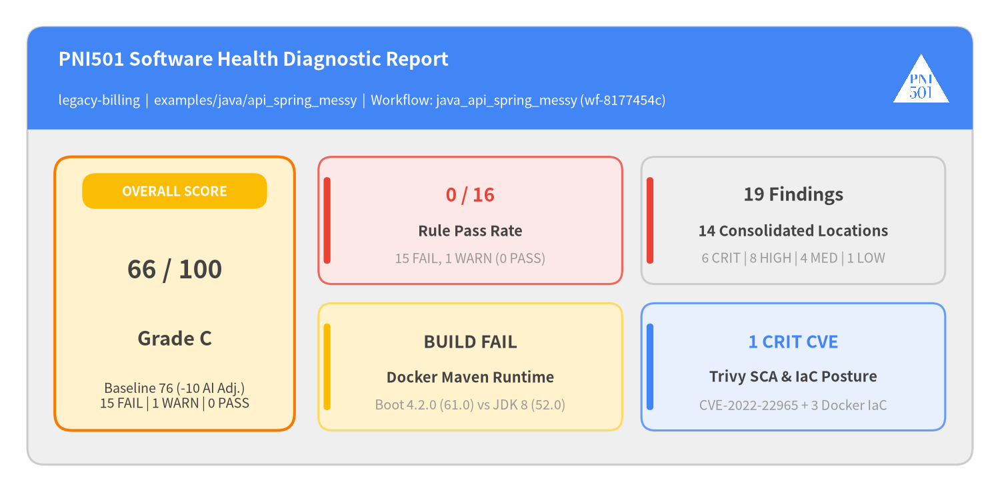
監査メタデータ・証跡プロベナンス
| 項目 | 値 |
|---|---|
| プロジェクト名 | legacy-billing (com.example:legacy-billing:0.0.1-SNAPSHOT) |
| 対象ルート | examples/java/api_spring_messy |
| 主言語・規模 | java（Maven、本番コード 6 ファイル / 187 LOC、テスト 1 ファイル） |
| ワークフロー ID・スコープ | java_api_spring_messy（category=audit, scope=repo） |
実行 ID (Run ID) |
wf-8177454c |
| 評価日時 (UTC) | 2026-11-22T11:29:02.337544+00:00 |
| Git リビジョン | main@d1e02277 (dirty) |
| 総合スコア・グレード | 66 / 100（グレード C） （決定論的ベースライン: 76、AI 定性調整: -10） |
| ルール準拠率 | 0 / 16 ルール合格（15 FAIL、1 WARN、0 PASS） |
| 検出事項サマリー | 計 19 件（決定論的 7 件・AI 定性 12 件）／統合済み 14 箇所（CRITICAL 6、HIGH 8、MEDIUM 4、LOW 1） |
| 後続連携計画 | Clean Architecture 移行実行計画 java_api_spring_messy_migration へ直接連携 |
監査範囲と機密保護について: 本レポートは、PNI501 Workflow v2 の下で実行された決定論的 AST 解析（
tree-sitter）、マニフェスト診断、コンテナ化された Maven/Docker ビルド・ランタイム検証、Trivy ファイルシステム SCA/IaC スキャン、および動的 HTTP ペネトレーション検証準備の結果を統合したものです。ソースコード上で検出された認証情報リテラルはすべて<REDACTED_SECRET>としてマスク済みです。
1. エグゼクティブサマリー
legacy-billing（examples/java/api_spring_messy）の総合スコアは 66/100（グレード C）、ルール合格率は 0/16（15 FAIL・1 WARN） であり、決定論的 AST ベースライン 76/100 に対して全 7 軸で -10pt の定性減点が適用されました。実 Docker ランタイム検証・tree-sitter AST 解析・Trivy SCA の横断検証により、pom.xml の未固定指定 spring-boot-starter-web:LATEST が Java 1.8 ビルドを即座にクラッシュさせると同時に CRITICAL な Spring4Shell 静的範囲アラートを発火し、JaCoCo カバレッジ計測および動的 HTTP ペネトレーションテスト（DAST）を連鎖的にブロックしているという明確な因果鎖が実証されました。
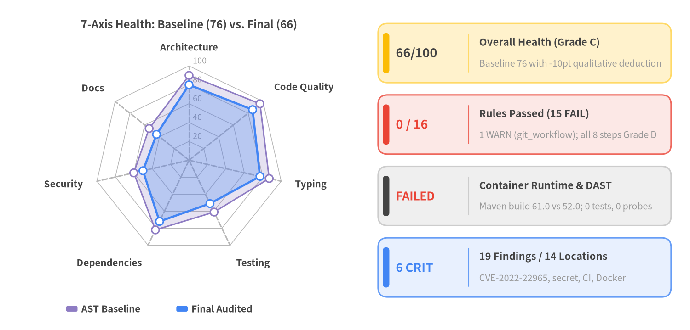
AST × Docker × Trivy が実証した根本原因チェーン
本監査で最も重要な発見は、ビルド不能・検証不能・深刻なサプライチェーン脆弱性がすべて同一の未固定マニフェストおよび廃止コンテナ基盤に起因している点です。
- 未固定マニフェスト（
pom.xml）:org.springframework.boot:spring-boot-starter-webに<version>LATEST</version>を指定したまま、EOL の Java1.8（バイトコード52.0）をターゲットとしており、Maven Wrapper（mvnw）も未整備です。 - 実コンパイラクラッシュ（
harness_build）: コンテナ化ビルド検証（java/maven.dockerfile,JAVA_VERSION=8）において Maven は動的にspring-boot-4.2.0.jar（SpringApplication.class、JDK 17+ 向けバイトコード61.0）を取得し、class file has wrong version 61.0, should be 52.0で即座に失敗しました。同時にプロジェクトDockerfileも、Docker Hub から廃止されたdocker.io/library/openjdk:latestの取得失敗（not found）により1.21sで失敗しました。 - 検証ゲートの連鎖ブロックと静的 SCA 露出: ビルド失敗により、オフライン JUnit 実行（
0/0件）、JaCoCo カバレッジ計測（N/A）、Spring Boot 起動スモーク確認（blocked）、動的 Web ペネトレーションテスト（web_pentest,0/0プローブ）が全面的にブロックされました。一方で Trivy ファイルシステム SCA は未固定のLATEST指定子を全過去バージョン範囲として評価（is_unpinned_specifier=True）し、CRITICALCVE-2022-22965（Spring4Shell, CVSS 9.8）を検出しました。 - ソースコード内の集中ホットスポット: 187 LOC のコードベース内部では、
BillingManager.java（BillingControllerとの循環依存、cognitive=56、引数 8 個、静的INVOICE_CACHE、String ==バグ、空catch、無効なprivate @Transactional）、GatewayClient.java（ハードコードされたGATEWAY_SECRET<REDACTED_SECRET>、Java 1.8 上での Java 11java.net.http不整合、HTTP タイムアウト欠如）、BillingController.java（可変シングルトンchannelの競合状態、未認証ANY /charge）の 3 クラスに負債が集中しています。
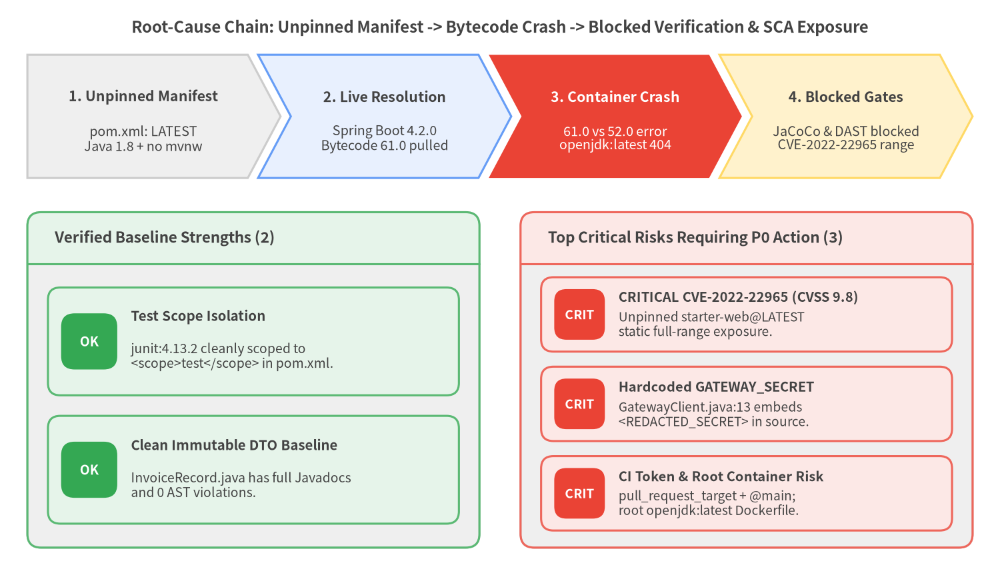
エグゼクティブ・スコアカード総括
| 検証ゲート | 判定 | 主な観測証跡 |
|---|---|---|
| 総合健全性スコア | 66 / 100（グレード C） | 7 軸スコア: architecture=80, code_quality=86, typing=77, testing=51, dependencies=72, security=50, documentation=44 |
| 最低スコア監査ステップ | 10 – 15 / 100（グレード D） | container_runtime_audit=10 (D), supply_chain_audit=15 (D), java_test_audit=15 (D) |
コンテナランタイム (RV-01..04) |
failed |
build=failed, tests=0/0 (blocked), line_cov=N/A, smoke=blocked (web_api) |
Trivy SCA & IaC (SEC-01..03) |
failed |
app_cves=1（CRITICAL=1, HIGH=0）、Dockerfile 設定不備 3 件（HIGH=1, MED=1, LOW=1）、Trivy シークレット 0 件（AST ハードコード秘密鍵 1 件） |
動的 Web ペネトレーション (SEC-06) |
error（ブロック） |
probes=0/0 合格、findings=0。スイートは .pni/pentests/examples/java/api_spring_messy に生成済みだが、対象コンテナビルド失敗により未実行 |
| 承認済み監査スコープ | リポジトリ全体 | --auto-approve（plan_gate=false）にて自動承認。本番 6 ファイル（src/main/java）、テスト 1 ファイル（src/test/java）、README.md |
2. アーキテクチャとソースコード構造
legacy-billing は、本番 Java コード 6 ファイル（187 LOC）と JUnit 4 スモークテスト 1 ファイルから成る**「共有可変グローバル／シングルトン状態を抱える循環型レガシー Spring Boot レイヤードモノリス」**です。InvoiceRecord.java にはクリーンな不変 DTO パターンが存在する一方、中核の課金処理と HTTP 受付層は実行時循環依存（BillingController <-> BillingManager）およびスレッド非安全な共有状態に陥っています。
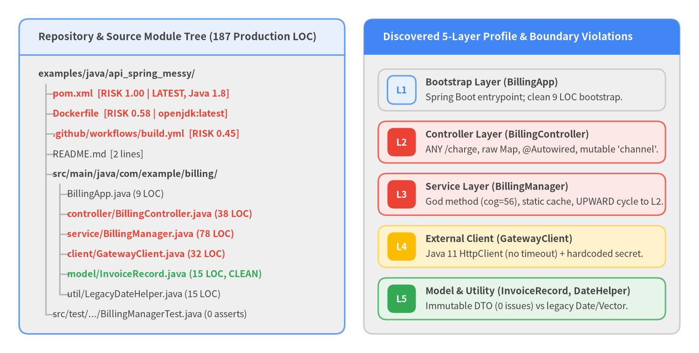
システムプロファイルとソースモジュール棚卸し
- ランタイム種別とスタック:
web_api。pom.xmlは Java1.8を宣言（GatewayClient.javaの Java 11java.net.httpと矛盾）、未固定spring-boot-starter-web:LATEST、javax.servlet-api:4.0.1、junit:4.13.2、およびラッパー（mvnw）なしの Maven 構成。 - 外部連携: 実行時に
System.getenv("LEGACY_PAYMENT_URL")（既定値https://billing.example.invalid/charge）を参照して外部決済ゲートウェイへ HTTPPOST送信。 - エントリポイント:
src/main/java/com/example/billing/BillingApp.java:mainおよびsrc/main/java/com/example/billing/controller/BillingController.java:chargeCustomer。
| ソースファイル | LOC | レイヤー | 公開型 | 公開メソッド／コンストラクタ | 健全性評価 |
|---|---|---|---|---|---|
src/main/java/com/example/billing/BillingApp.java |
9 | Bootstrap | BillingApp |
main |
簡潔な Spring Boot 起動クラス（クラス Javadoc のみ欠落） |
src/main/java/com/example/billing/controller/BillingController.java |
38 | Controller | BillingController |
chargeCustomer, lastChannel |
循環依存、可変シングルトン channel、生 Map、未認証 ANY /charge |
src/main/java/com/example/billing/service/BillingManager.java |
78 | Service | BillingManager |
processBatchBilling |
最大コードホットスポット: 上向き循環依存、cognitive=56、引数 8 個、静的 INVOICE_CACHE、String ==、空 catch |
src/main/java/com/example/billing/client/GatewayClient.java |
32 | External Client | GatewayClient |
sendCharge |
ハードコード <REDACTED_SECRET>、Java 1.8 上での Java 11 HttpClient、タイムアウト欠如、System.getenv |
src/main/java/com/example/billing/model/InvoiceRecord.java |
15 | Model & Utility | InvoiceRecord |
InvoiceRecord, getAmountCents, getInvoiceId |
リポジトリ内で最も健全なモジュール: 不変 DTO、完全 Javadoc、AST 違反 0 件 |
src/main/java/com/example/billing/util/LegacyDateHelper.java |
15 | Model & Utility | LegacyDateHelper |
collectAuditTags, formatTimestamp |
非推奨 SimpleDateFormat・java.util.Date・生 Vector を使用、Javadoc 欠落 |
循環依存とサーマル・リスク・ホットスポット分析
以下のクラス依存関係図＋サーマルヒートマップは、リスクが集中するホットスポット（GatewayClient 0.70、BillingManager 0.56、BillingController 0.56）と、クリーンな不変ベースライン（InvoiceRecord 0.06）の対比を可視化したものです。BillingManager から BillingController へ向かう赤色の上向き依存（circularController）が、Spring Boot 2.6+ / 3.x で既定禁止される DI 循環を引き起こしています。
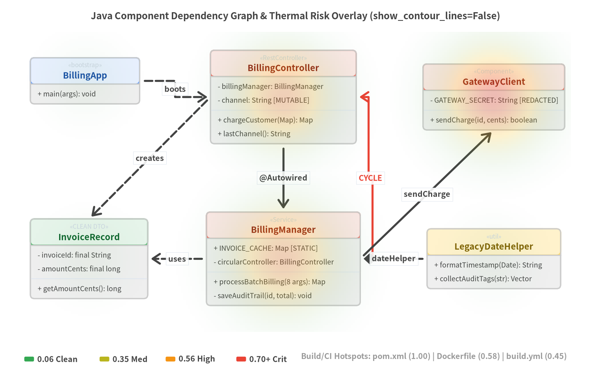
事前ソート済みモジュール・リスク・ホットスポット一覧
| ファイルパス | LOC | リスクスコア | 重要度別検出数 | 該当ルール |
|---|---|---|---|---|
pom.xml |
— | 1.00 |
2 CRIT, 1 HIGH |
common/security_vulnerability, common/runtime_verification, java/dependencies |
examples/java/api_spring_messy/src/main/java/com/example/billing/client/GatewayClient.java |
32 | 0.70 |
1 CRIT |
common/security |
src/main/java/com/example/billing/client/GatewayClient.java |
— | 0.60 |
1 CRIT, 1 MED |
common/security, java/modern_stack |
Dockerfile |
— | 0.58 |
1 HIGH |
common/supply_chain |
src/main/java/com/example/billing/controller/BillingController.java |
— | 0.56 |
2 HIGH |
common/security_vulnerability, java/frameworks/spring_boot |
src/main/java/com/example/billing/service/BillingManager.java |
— | 0.56 |
2 HIGH |
common/architecture, java/code_quality |
.github/workflows/build.yml |
— | 0.45 |
1 CRIT |
common/supply_chain |
examples/java/api_spring_messy/src/main/java/com/example/billing/service/BillingManager.java |
78 | 0.41 |
1 MED |
common/maintainability |
/charge 実行フローと並行性・エラーモデル
/charge への各 HTTP リクエストは、共有可変状態への競合と無音例外握りつぶしを伴う 4 段階の処理を通過します。

状態管理・境界違反・並行性評価
- 深刻な境界違反:
BillingManagerがBillingControllerを import し@Autowiredフィールド注入（circularController, 23 行目）しているため、lastChannel()参照のためだけに実行時循環（BillingController -> BillingManager -> BillingController）が発生しています。 - 共有可変状態:
BillingManager.INVOICE_CACHE（src/main/java/com/example/billing/service/BillingManager.java:17）: 同期化・サイズ上限なしのプロセス内静的生HashMap。BillingController.channel（src/main/java/com/example/billing/controller/BillingController.java:20）: HTTP リクエストごとにservletRequest.getMethod()で上書きされる可変シングルトンフィールド。
- エラー・並行性モデル: 複数リクエストが同時到着する Servlet コンテナ環境では
BillingController.channelとINVOICE_CACHEでデータ競合が発生します。さらにBillingManagerは空のcatch (Exception e) {}（83 行目）で監査・キャッシュ例外を無音で握りつぶし、GatewayClientはタイムアウト未設定のHttpClient.newHttpClient()でワーカースレッドを無期限ブロックしつつ標準エラーへprintStackTrace()を出力します。
3. 推奨改善ロードマップ
legacy-billing の改善計画は、全 11 件の優先度付きアクション（P0: 5 件、P1: 5 件、P2: 1 件） に段階化されています。まず最優先の P0 で Java 21 / Spring Boot 3.4 の決定論的ビルド復旧・重大セキュリティ除去・DI 循環解消を達成し、続く P1 で JUnit 5 特性テストによる安全網を構築した上でリファクタリングおよび DAST 再検証を実施します。
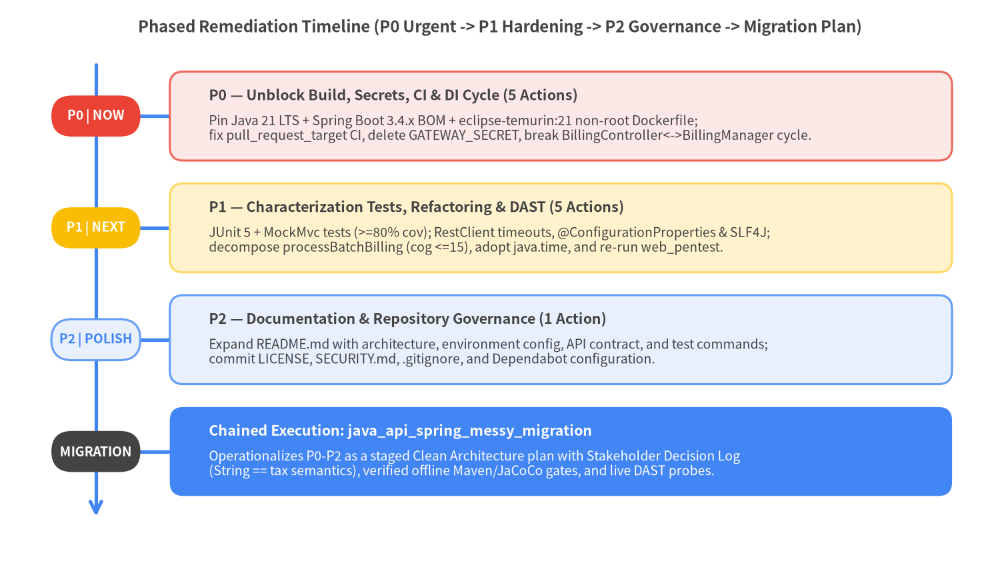
改善対象ドメイン分布とフェーズ完了基準
全 11 件のバックログのうち 55%（6 件） をセキュリティおよび依存関係安定化が占めており、すべての P0 項目が Maven/Docker コンパイル復旧（RV-01）、重大な SCA/シークレット解消（SEC-01..03）、または Spring Boot 3.x 起動要件（循環依存の排除）の直接のブロッカーとなっています。
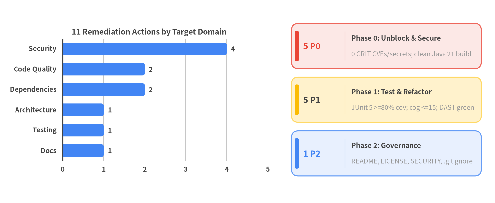
アクションプラン・トレーサビリティマトリクス（P0 -> P1 -> P2）
下表は java_api_spring_messy_score.json の事前ソート順（P0 -> P1 -> P2 全 11 件）を厳密に保持し、対象ファイル・期待効果・関連ルール／CVE を対応付けたものです。
| # | 優先度 | カテゴリ | アクション内容 | 対象ファイル | 期待効果 | 関連ルール / CVE |
|---|---|---|---|---|---|---|
| 1 | P0 |
architecture |
BillingController<->BillingManager 循環解消と可変シングルトン／静的状態の排除: circularController と BillingController.channel を削除し、コンストラクタ注入へ移行するとともに INVOICE_CACHE を外部化する。 |
src/main/java/com/example/billing/controller/BillingController.java, src/main/java/com/example/billing/service/BillingManager.java |
Spring DI 循環依存および並列リクエスト間のデータ競合を解消。 | common/architecture, java/frameworks/spring_boot |
| 2 | P0 |
dependencies |
Java 21 LTS + Spring Boot 3.4 BOM + eclipse-temurin:21 固定による Maven / Docker ビルド復旧: Java 1.8 と spring-boot-starter-web:LATEST を Java 21 + 固定版 Spring Boot 3.4.x 親 POM/BOM へ置換し、廃止された openjdk:latest を eclipse-temurin:21-jdk/jre へ移行する。 |
pom.xml, Dockerfile |
決定論的コンパイル、JaCoCo カバレッジ計測、起動検証を復旧。 | common/runtime_verification, java/dependencies |
| 3 | P0 |
security |
GitHub Actions CI トリガーと root Dockerfile の堅牢化: pull_request_target を pull_request + 最小権限 permissions: + SHA 固定アクションへ置換し、Dockerfile を非 root eclipse-temurin:21-jre と .dockerignore 構成へ移行する。 |
.github/workflows/build.yml, Dockerfile |
CI トークン奪取および可変 root コンテナ露出リスクを解消。 | common/supply_chain, common/security |
| 4 | P0 |
security |
Spring Boot 3.4.x BOM 固定と Dockerfile root/:latest 設定不備の解消: 親 POM/BOM により Spring Boot 3.4.x を固定して CVE-2022-22965 範囲一致を解消し、Dockerfile の DS-0001・DS-0002・DS-0026 を是正する。 |
pom.xml, Dockerfile |
CRITICAL の未固定 SCA 露出と HIGH の root コンテナ設定不備を解消。 | common/security_vulnerability, SEC-01, SEC-02, CVE-2022-22965 |
| 5 | P0 |
security |
ハードコードされた GATEWAY_SECRET の削除と @ConfigurationProperties 注入: 13 行目の定数を削除し認証情報をローテーションした上で、外部環境変数／Vault から @ConfigurationProperties 経由で注入する。 |
src/main/java/com/example/billing/client/GatewayClient.java |
ソースコード管理上の CRITICAL 認証情報漏えいを解消。 | common/security, common/supply_chain |
| 6 | P1 |
code_quality |
RestClient タイムアウト、@ConfigurationProperties、SLF4J ログ、Actuator /healthz の導入: System.getenv と HttpClient.newHttpClient() をタイムアウト付き RestClient へ置換し、System.out/printStackTrace・空 catch を SLF4J へ統一し、Actuator ヘルスプローブを有効化する。 |
src/main/java/com/example/billing/client/GatewayClient.java, src/main/java/com/example/billing/service/BillingManager.java |
外部ゲートウェイ応答遅延時のスレッド枯渇を防ぎ 12-Factor 可観測性を回復。 | common/twelve_factor, common/production_readiness |
| 7 | P1 |
code_quality |
processBatchBilling 分割、String ==・空 catch・private @Transactional 修正、レガシー Date/Vector 置換: 生 Map/List を型付き Java record DTO へ置換し、processBatchBilling を分割（cognitive <=15, params <=6）、.equals() と SLF4J、および java.time/List を適用する。 |
src/main/java/com/example/billing/service/BillingManager.java, src/main/java/com/example/billing/util/LegacyDateHelper.java |
バグ混入リスクを大幅に低減し、型安全性と可読性を回復。 | common/maintainability, java/code_quality, java/typing, java/modern_stack |
| 8 | P1 |
dependencies |
Maven ビルドの Java 21 LTS・Spring Boot 3.4 BOM・mvnw 刷新: pom.xml を Java 1.8 / LATEST / javax / JUnit 4 から Java 21 LTS + Spring Boot 3.4 BOM + JUnit 5 へ移行し、mvnw をコミットする。 |
pom.xml |
再現可能なビルドと長期サポート（LTS）セキュリティ更新基盤を確立。 | java/dependencies, common/supply_chain |
| 9 | P1 |
security |
Java 21 + Spring Boot 3.4 コンテナ復旧後の web_pentest 再実行: pom.xml と Dockerfile のビルド復旧後、.pni/pentests/examples/java/api_spring_messy を実行し、POST 限定・入力検証・セキュリティヘッダーを動的検証する。 |
pom.xml, src/main/java/com/example/billing/controller/BillingController.java |
継続的な動的セキュリティ検証（SEC-06）を復旧。 |
common/security_vulnerability, SEC-06 |
| 10 | P1 |
testing |
アサーションなし JUnit 4 スモークテストを JUnit 5 + MockMvc 特性テスト群へ刷新: リファクタリング着手前に JUnit 5 Jupiter へ移行し、BillingController・BillingManager・GatewayClient に対する実アサーション付き特性テストを追加する。 |
src/test/java/com/example/billing/BillingManagerTest.java |
Java 21 / Clean Architecture 移行の安全網を構築しカバレッジ >=80% を達成。 |
java/testing |
| 11 | P2 |
documentation |
README.md 拡充とリポジトリ基本ガバナンスファイルの追加: セットアップ・環境変数・API エンドポイント・テスト実行手順を README.md に整備し、LICENSE・SECURITY.md・.gitignore を追加する。 |
README.md |
オンボーディング品質とリポジトリガバナンス準拠を向上。 | common/documentation, common/git_workflow |
後続マイグレーション計画（java_api_spring_messy_migration）への接続
本診断ロードマップは、Clean Architecture 移行実行計画 java_api_spring_messy_migration へ以下の 3 ウェーブ構成で直接引き継がれます。
- Wave 1（安定化とバージョン固定 — アクション #2, #3, #4, #5）: Java 21 LTS + Spring Boot 3.4.x BOM +
mvnwの固定、.github/workflows/build.ymlおよびDockerfileの堅牢化、GATEWAY_SECRETの外部化を実施。 - Wave 2（安全網と仕様合意 — アクション #10, #7）: JUnit 5 +
MockMvc特性テストを確立し、String ==税率分岐（PAID,USD,JPY）の仕様変更についてステークホルダー合意ログ（Stakeholder Decision Log）で確認。 - Wave 3（Clean Architecture 移行と PRR — アクション #1, #6, #7, #8, #9, #11）:
BillingController <-> BillingManager循環の解消、JavarecordDTO とリポジトリ／ゲートウェイポートの抽出、@PostMapping("/charge")+@Valid+ 認証の導入、web_pentestと JaCoCo（>=80%）の実測検証、ガバナンス文書整備を完了。
4. 監査パイプライン（DAG）・評価基準・検出事項一覧
本章では本監査の完全な透明性と再現性を担保するため、アクションレベルの実行済み監査パイプライン DAG、検査対象スコープと決定論的ツール一覧、7 軸の決定論的ベースライン vs. AI 定性調整（±10pt）テーブル、弱点順の監査ステップ別スコア、全 16 ルールの準拠マトリクス（FAIL -> WARN）、重複排除済みの箇所別検出事項一覧、および機械可読アーティファクト参照一覧を提示します。
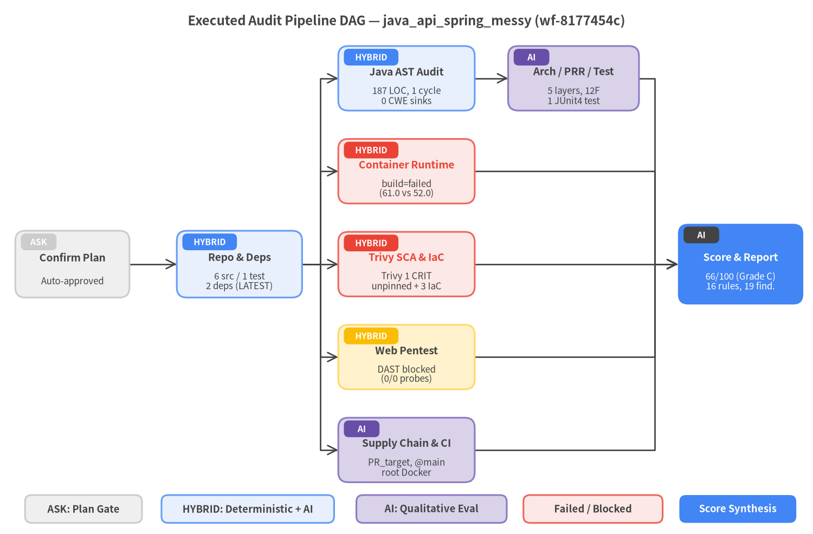
検査スコープおよび実行済み決定論的ツール
| スコープ項目 | 記録された監査構成・実行実績 |
|---|---|
| 対象ルート・パス | ルート: examples/java/api_spring_messy | ソース: ['src/main/java'] | テスト: ['src/test/java'] | ドキュメント: ['README.md'] | 除外: ['none'] |
| 言語・フレームワーク | 主言語: java | 補助言語: ['none'] | 検出フレームワーク: spring-boot, spring-framework, javax-ee, junit4 |
| リポジトリ証跡 | Git ブランチ・コミット: main@d1e02277 (dirty) | 実行 ID: wf-8177454c |
| 実行済み決定論的ツール | project_inspect (java)、tree-sitter AST (java)、container runtime harness (docker: java/maven.dockerfile)、Trivy (docker: fs, ghcr.io/aquasecurity/trivy:0.69.3)、web_pentest (httpx, 0 probes — ビルド失敗によりブロック) |
7 軸の決定論的ベースライン vs. AI 定性調整（±10pt）
PNI Workflow v2 では、すべての評価軸を決定論的ツール由来のベースラインスコアにアンカー固定した上で、上限 ±10pt の AI 定性調整を適用します。legacy-billing ではビルド不能・循環依存・セキュリティ欠陥が静的指標以上に複合悪化しているため、全 7 軸で最大減点 -10pt が適用され、総合スコアは 76 -> 66（グレード C） となりました。
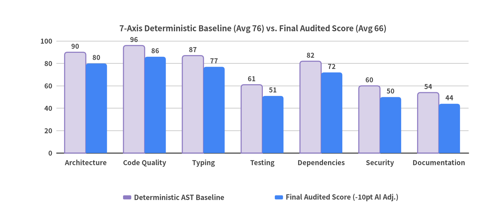
| 評価軸 | 決定論的ベースライン | AI 調整 (±10pt) |
最終スコア | 定性調整の根拠 |
|---|---|---|---|---|
アーキテクチャ (Architecture) |
90 |
-10 |
80 |
BillingController <-> BillingManager 実行時循環依存、@Autowired フィールド注入、可変シングルトン BillingController.channel、プロセス内静的 HashMap INVOICE_CACHE。 |
コード品質 (Code Quality) |
96 |
-10 |
86 |
BillingManager.processBatchBilling 巨大メソッド（cognitive=56, 引数 8 個, 57 LOC）、String == 参照比較バグ 3 箇所、空 catch、無効な private @Transactional 自己呼び出し、System.out/printStackTrace 4 箇所。 |
型安全性 (Typing) |
87 |
-10 |
77 |
BillingController / BillingManager の生 Map/List ジェネリクス、未型付け Object 引数（traceHint, extraContext）、@SuppressWarnings("unchecked")、Java 1.8 上での Java 11 java.net.http 不整合。 |
テスト (Testing) |
61 |
-10 |
51 |
唯一の JUnit 4 テスト（BillingManagerTest.testSmokeRun）がアサーションなし、静的モジュール網羅率 33.3%、Java 8 vs. Spring Boot 4.2.0 ビルド失敗により Maven/JaCoCo 実行が完全ブロック。 |
依存関係 (Dependencies) |
82 |
-10 |
72 |
未固定 spring-boot-starter-web:LATEST（Spring Boot 4.2.0 バイトコード 61.0 を取得し Java 1.8 ビルドを破壊）、EOL javax.servlet/JUnit 4、mvnw および Dependabot 欠如。 |
セキュリティ (Security) |
60 |
-10 |
50 |
ハードコード GATEWAY_SECRET（<REDACTED_SECRET>）、特権 pull_request_target + actions/checkout@main CI、root openjdk:latest Dockerfile（DS-0001/DS-0002/DS-0026）、未固定 CRITICAL CVE-2022-22965 範囲露出、未認証 ANY /charge、DAST ブロック。 |
ドキュメント (Documentation) |
54 |
-10 |
44 |
わずか 2 行の README.md、33.3% の Javadoc 網羅率（公開 Javadoc 10 件欠落）、陳腐化した @param obsoleteToken 不一致、LICENSE/SECURITY.md 欠如。 |
| 総合スコア | 76 |
-10 |
66 (C) |
ビルド・セキュリティ・アーキテクチャの複合欠陥により総合評価はグレード C。 |
実行済み監査ステップ別スコアと検出ソース内訳
全 8 つの実行済み監査ステップはいずれも グレード D（10〜25 / 100） となり、container_runtime_audit (10)、supply_chain_audit (15)、java_test_audit (15) が特に低い結果となりました。
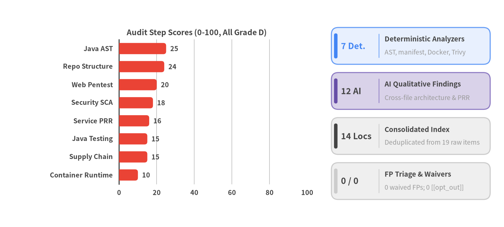
検出ソース内訳・誤検知トリアージ・例外承認ログ
- 検出ソース内訳: 決定論的アナライザー =
7件、AI 定性評価 =12件、合計 =19件（統合後14固有箇所）。 - AI 誤検知トリアージログ: 決定論的事前検出の除外・再分類 =
0件。 - 設定済み設計例外（
pni.toml [[opt_out]]）: アクティブな例外設定 =0件。
ルール準拠マトリクス（FAIL -> WARN 全 16 ルール）
| 判定 | ルール ID | 評価元アクション | 根拠サマリー |
|---|---|---|---|
FAIL |
common/architecture |
java_ast_audit |
実行時循環依存 1 件（BillingController -> BillingManager -> BillingController）、@Autowired circularController による上向き結合、可変静的 INVOICE_CACHE。 |
FAIL |
common/documentation |
repo_structure_audit |
README.md がわずか 2 行（# Legacy Billing / Run mvn spring-boot:run）のみで、設計・環境設定・API 仕様・テスト手順が欠落。 |
FAIL |
common/maintainability |
java_ast_audit |
BillingManager.processBatchBilling が SIG 単位サイズ（57 行）・複雑度（branches=13, cognitive=56）・引数数（8 > 6）を超過し、静的 INVOICE_CACHE と 83 行目の空 catch を内包。 |
FAIL |
common/production_readiness |
container_runtime_audit |
ビルド・起動不可。GatewayClient.java:22 の connectTimeout 欠如、BillingManager.java:83 の空 catch、非構造ログ 4 箇所、Actuator /healthz 欠如、未認証 ANY /charge。 |
FAIL |
common/runtime_verification |
deterministic_baseline |
harness_build=failed。RV-01 失敗（openjdk:latest not found および Java 8 Maven での spring-boot-4.2.0.jar バイトコード 61.0 vs 52.0 衝突）により RV-02/RV-03/RV-04 がブロック。 |
FAIL |
common/security |
repo_structure_audit |
GatewayClient.java:13 のハードコード GATEWAY_SECRET（<REDACTED_SECRET>）、特権 pull_request_target CI、root openjdk:latest コンテナ、未検証生 Map 入力、未認証 ANY /charge。 |
FAIL |
common/security_vulnerability |
java_ast_audit |
SEC-01: 未固定 spring-boot-starter-web:LATEST の CRITICAL CVE-2022-22965（CVSS 9.8）。SEC-02: Dockerfile DS-0002/DS-0001/DS-0026。SEC-03: ハードコード秘密鍵。SEC-05: 未認証 ANY /charge。SEC-06: DAST error（ビルド失敗で 0 プローブ）。 |
FAIL |
common/supply_chain |
repo_structure_audit |
LICENSE・SECURITY.md・Dependabot・mvnw/ロックファイル欠如、未固定 LATEST、pull_request_target + @main（permissions: 欠如）、root openjdk:latest（.dockerignore 欠如）。 |
FAIL |
common/twelve_factor |
service_readiness_audit |
Factor III 違反（GatewayClient.java:16 の直接 System.getenv）、Factor VI 違反（静的 INVOICE_CACHE とシングルトン channel）、Factor XI 違反（System.out/printStackTrace 4 箇所）。 |
FAIL |
java/code_quality |
java_ast_audit |
Javadoc 網羅率 33.3%（欠落 10 件、陳腐化 @param obsoleteToken 1 件）、String == リテラル比較バグ 3 箇所（"PAID", "USD", "JPY"）、空 catch、System.out/printStackTrace 4 箇所。 |
FAIL |
java/dependencies |
repo_structure_audit |
pom.xml が EOL Java 1.8 を指定、spring-boot-starter-web:LATEST の動的参照、レガシー javax.servlet:4.0.1・JUnit 4（4.13.2）、mvnw 欠如。 |
FAIL |
java/frameworks/spring_boot |
java_ast_audit |
@Autowired フィールド注入 3 箇所、リクエスト毎に書き換わるシングルトン channel、無制限 @RequestMapping("/charge")、spring-tx 欠如の private @Transactional、レガシー javax.servlet。 |
FAIL |
java/modern_stack |
java_ast_audit |
Java 1.8 宣言と GatewayClient.java:4 の Java 11 java.net.http.HttpClient の矛盾、LegacyDateHelper の非スレッド安全 SimpleDateFormat・Date・Vector、未整列 import 4 件＋ワイルドカード import 1 件。 |
FAIL |
java/testing |
java_test_audit |
レガシー JUnit 4、アサーションなしのテストメソッド 1 件（BillingManagerTest.testSmokeRun）、静的モジュール網羅率 33.3%、ビルド失敗による JUnit/JaCoCo 実行ブロック。 |
FAIL |
java/typing |
java_ast_audit |
型安全網羅率 81.8%：BillingController/BillingManager の生 Map/List、未型付け Object 引数（traceHint, extraContext）、@SuppressWarnings("unchecked")。 |
WARN |
common/git_workflow |
repo_structure_audit |
.gitignore 欠如、および .github/workflows/build.yml が安全な pull_request ではなく pull_request_target 上で mvn package を実行。 |
統合済み箇所別検出事項インデックス（固有 14 箇所）
| # | 重要度 | 対象箇所 | 関連ルール | 証跡および推奨対策 |
|---|---|---|---|---|
| 1 | CRITICAL |
.github/workflows/build.yml |
common/supply_chain |
permissions: なしで pull_request_target を起動し可変 actions/checkout@main を使用。対策: pull_request へ切替、permissions: { contents: read } 追加、フル SHA 固定。 |
| 2 | CRITICAL |
examples/java/api_spring_messy/src/main/java/com/example/billing/client/GatewayClient.java:13 |
common/security |
GATEWAY_SECRET にハードコードされた秘密鍵リテラル（<REDACTED_SECRET>, OWASP ASVS）。対策: 環境変数またはシークレットマネージャへ移行し鍵をローテーション。 |
| 3 | CRITICAL |
pom.xml |
common/security_vulnerability, common/runtime_verification, java/dependencies |
未固定 spring-boot-starter-web@LATEST が Trivy CVE-2022-22965 範囲一致と Maven コンパイル失敗（spring-boot-4.2.0.jar バイトコード 61.0 vs Java 1.8 52.0）を同時誘発。javax.servlet/JUnit 4・mvnw 欠如も併存。対策: Java 21 LTS + Spring Boot 3.4.x BOM + JUnit 5 へ固定し mvnw をコミット。 |
| 4 | CRITICAL |
src/main/java/com/example/billing/client/GatewayClient.java |
common/security, java/modern_stack |
ハードコード GATEWAY_SECRET（<REDACTED_SECRET>）、Java 1.8 上の Java 11 java.net.http 矛盾、タイムアウト欠如、System.getenv、スタックトレース出力。対策: 秘密鍵削除・外部化、Java 21 + タイムアウト付き RestClient、@ConfigurationProperties、SLF4J、import 整列。 |
| 5 | CRITICAL |
— （依存 SCA） |
CVE-2022-22965 |
org.springframework.boot:spring-boot-starter-web@LATEST (pom) が Spring4Shell 履歴範囲に一致。対策: 修正済み版（最小 2.5.12, 2.6.6、推奨 Spring Boot 3.4.x BOM）へ固定。 |
| 6 | HIGH |
Dockerfile |
common/supply_chain |
廃止・可変 openjdk:latest を使用し、.dockerignore なしで全ファイルをコピーし root で実行。対策: マルチステージ eclipse-temurin:21-jdk / 21-jre-alpine、非 root USER、.dockerignore を導入。 |
| 7 | HIGH |
src/main/java/com/example/billing/controller/BillingController.java |
common/security_vulnerability, java/frameworks/spring_boot |
ビルド失敗により ANY /charge への web_pentest がブロック。シングルトン channel の毎リクエスト書き換え、無制限 @RequestMapping、生 Map の無検証受付。対策: channel 削除、@PostMapping("/charge") + @Valid Java record + 認証導入後、web_pentest を再実行。 |
| 8 | HIGH |
src/main/java/com/example/billing/service/BillingManager.java |
common/architecture, java/code_quality |
@Autowired circularController 循環依存、静的生 INVOICE_CACHE、processBatchBilling（cognitive=56, 引数 8 個, 陳腐化 @param obsoleteToken, 52/55/57 行目の String ==, 83 行目の空 catch, 無効な private @Transactional）。対策: コンストラクタ注入、キャッシュ外部化、メソッド分割、.equals()、SLF4J、専用リポジトリ Bean 化。 |
| 9 | HIGH |
src/test/java/com/example/billing/BillingManagerTest.java |
java/testing |
testSmokeRun が InvoiceRecord 生成と getAmountCents() 呼出のみでアサーションも主要クラス検証も皆無。対策: JUnit 5 + Mockito + MockMvc 特性テスト群へ移行し JaCoCo >=80% を達成。 |
| 10 | HIGH |
— （Import グラフ） |
common/architecture |
循環インポート: BillingController -> BillingManager -> BillingController。対策: 上向き依存を除去し共通モデル／インタフェースを下位層へ抽出。 |
| 11 | MEDIUM |
examples/java/api_spring_messy/src/main/java/com/example/billing/service/BillingManager.java:33 |
common/maintainability |
processBatchBilling: length=57 lines, branches=13, cognitive=56。対策: 単一責務ヘルパーへ分割（cognitive <= 15）。 |
| 12 | MEDIUM |
— （ドキュメント） |
common/documentation |
has_readme=True, lines=2。対策: README.md にアーキテクチャ、環境構築、API 仕様、テスト手順を記載。 |
| 13 | MEDIUM |
— （ロックファイル） |
common/supply_chain |
manifests=['pom.xml'], lockfiles=[]。対策: BOM 固定および Maven Wrapper（mvnw）／依存検証メタデータをコミット。 |
| 14 | LOW |
— （バージョン境界） |
common/supply_chain |
unpinned=['org.springframework.boot:spring-boot-starter-web:LATEST']。対策: 明示的なバージョン固定により再現可能なビルドを担保。 |
機械可読アーティファクト参照一覧
CI ゲート連携および IDE 診断向けに、すべての構造化メトリクス・検出事項・DAG・決定論的スキャン出力は以下の機械可読ファイルへ永続化されています。
| アーティファクトパス | 形式 / スキーマ | 用途 |
|---|---|---|
docs/reports/java_api_spring_messy/java_api_spring_messy_score.json |
ScoreResult v2.0 (JSON) |
7 軸スコア・ルール準拠・検出事項・改善計画の完全構造化データ |
docs/reports/java_api_spring_messy/java_api_spring_messy_summary.json |
ScoreSummary (JSON) |
CI / ポータル表示用の軽量サマリーメトリクス |
docs/reports/java_api_spring_messy/java_api_spring_messy_findings.sarif |
SARIF 2.1.0 |
GitHub Code Scanning および IDE 向けインライン診断結果 |
docs_src/reports/java_api_spring_messy/_facts/plan.json |
PNI Plan v2.0 (JSON) | 事前偵察計画および検証済みワークフロー DAG |
docs_src/reports/java_api_spring_messy/_facts/facts.json |
決定論的ファクト束 (JSON) | AST・Maven/Docker ランタイム・Trivy SCA・ペネトレーション生証跡 |
docs_src/reports/java_api_spring_messy/_facts/architecture.json |
ArchitectureRecord (JSON) |
コード裏付け済みの 5 層アーキテクチャ・シンボル・実行フロー記録 |
5. 詳細分析: コード品質・テスト・ランタイム検証
Java ソース 6 モジュール（187 LOC, 11 関数）に対する tree-sitter AST 解析と Docker コンテナ実機検証により、クリーンな不変値オブジェクト（InvoiceRecord.java）と深刻に劣化した中核処理（BillingManager.java・BillingController.java・GatewayClient.java）との鮮明な乖離が明らかになりました。加えて、Maven/Docker の二重コンパイル失敗によりオフライン単体テストと JaCoCo カバレッジ計測が完全にブロックされています。

静的 AST 品質・SIG 保守性・12-Factor テレメトリ
| メトリクス区分 | 指標名 | 計測値 | 診断所見 |
|---|---|---|---|
| コードベース規模 | total_files / total_loc / total_functions |
6 / 187 / 11 |
小規模ながら主要 3 ファイルに重大欠陥が極端に集中 |
| 静的網羅率 | import_hygiene_coverage_pct |
83.3% |
GatewayClient.java に未整列 import 4 件＋ワイルドカード import java.util.*; 1 件 |
| 静的網羅率 | type_safety_coverage_pct |
81.8% |
生ジェネリクス署名（Map/List）2 件、未型付け Object 引数 2 件、@SuppressWarnings("unchecked") 2 件 |
| 静的網羅率 | docstring_coverage_pct |
33.3% |
公開 Javadoc 欠落 10 件＋processBatchBilling の陳腐化 @param obsoleteToken 不一致 1 件 |
| 静的網羅率 | module_test_coverage_pct |
33.3% |
アサーションなしの JUnit 4 スモークテスト 1 件が InvoiceRecord に触れるのみ |
| SIG 保守性 | complex_functions / excessive_parameters |
1 / 1 |
BillingManager.processBatchBilling: 57 行, branches=13, cognitive=56, 引数 8 個 (> 6) |
| 結合・バグ指標 | circular_dependencies / global_state / bug_risk_idioms |
1 / 1 / 7 |
BillingController <-> BillingManager、静的 INVOICE_CACHE、String == 3 件、空 catch、System.out 3 件 |
| 互換性 | undeclared_dependencies / language_version_mismatches |
1 / 1 |
spring-tx 未宣言の @Transactional、Java 1.8 上での Java 11 java.net.http.HttpResponse |
| 12-Factor / SRE PRR | missing_io_timeouts / scattered_env / unstructured_logging |
1 / 1 / 4 |
タイムアウトなしの HttpClient.newHttpClient()、System.getenv()、System.out 3 件＋printStackTrace() 1 件 |
主要ソースコード欠陥の内訳
BillingManager.processBatchBilling（src/main/java/com/example/billing/service/BillingManager.java:33）:- SIG 単位サイズ・複雑度・引数過多:
57行、13分岐、認知複雑度56（基準<= 15）、引数8個（基準<= 6）にわたり、生List items・複数の真偽フラグ・未型付けObject extraContextを混在させています。 - 文字列参照比較バグ（
String ==）: 52 行目（status == "PAID"）、55 行目（currency == "USD"）、57 行目（currency == "JPY"）で.equals()ではなく参照同値性==を使用しており、実行時 JSON デシリアライズ文字列で税率計算分岐が意図せずスキップされる欠陥があります。 - 無音失敗と無効なトランザクション制御: 83 行目の空
catch (Exception e) {}が監査・キャッシュ・コントローラ参照時の例外をすべて握りつぶします（79 行目の未定義メソッドdateHelper.currentPeriodLabel()呼出を含む）。また 91 行目のprivate void saveAuditTrail(...)への@Transactional付与は、Spring AOP プロキシを自己呼び出しおよびprivate修飾でバイパスし、さらにpom.xmlにspring-tx依存自体が未宣言です。 - Javadoc 署名不一致: 存在しない
@param obsoleteTokenが残存し、実際の引数 7 個が未記載です。
- SIG 単位サイズ・複雑度・引数過多:
GatewayClient.java（src/main/java/com/example/billing/client/GatewayClient.java）:- 言語バージョン API 不整合:
pom.xmlが1.8を宣言する一方で、4〜6 行目で Java 11+ のjava.net.http.{HttpResponse, HttpRequest, HttpClient}を import しています。 - 運用・ログ欠陥: 22 行目の
HttpClient.newHttpClient()に接続／読み取りタイムアウトがなく、16 行目で直接System.getenv("LEGACY_PAYMENT_URL")を参照し、20 行目のSystem.out.printlnと 32 行目のe.printStackTrace()で非構造出力を行っています。
- 言語バージョン API 不整合:
LegacyDateHelper.java（src/main/java/com/example/billing/util/LegacyDateHelper.java）:- スレッド非安全な
SimpleDateFormat、旧java.util.Date、同期化レガシーコレクション生Vectorを使用しており、java.time.Instant/DateTimeFormatterと型付きList<String>への置換が必要です。
- スレッド非安全な
コンテナランタイム検証とビルド失敗の診断
2 系統のコンテナビルドがいずれもゲート RV-01（ビルド可能性） で失敗したため、オフライン単体テスト（RV-02）、JaCoCo カバレッジ計測（RV-03）、Web API 起動スモーク検証（RV-04）がすべてブロックされました。
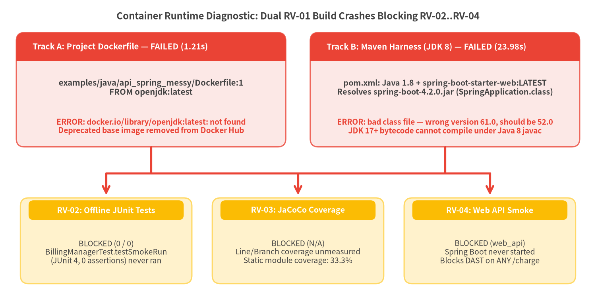
コンパイラおよび Docker エラー出力抜粋（原文）
1. プロジェクト Dockerfile ビルド失敗（examples/java/api_spring_messy/Dockerfile, 1.21s, 終了コード 1）:
#2 ERROR: docker.io/library/openjdk:latest: not found
Dockerfile:1
1 | >>> FROM openjdk:latest
ERROR: failed to build: failed to solve: openjdk:latest: failed to resolve source metadata
for docker.io/library/openjdk:latest: docker.io/library/openjdk:latest: not found
2. Java 8 Maven ハーネスコンパイル失敗（.pni/dockerfiles/examples/java/api_spring_messy/Dockerfile, 23.98s, 終了コード 1）:
9.861 [ERROR] bad class file: /m2repo/org/springframework/boot/spring-boot/4.2.0/spring-boot-4.2.0.jar(org/springframework/boot/SpringApplication.class)
9.861 [ERROR] class file has wrong version 61.0, should be 52.0
9.861 [ERROR] Please remove or make sure it appears in the correct subdirectory of the classpath.
ERROR: failed to build: failed to solve: process "/bin/sh -c mvn -B -Dmaven.repo.local=/m2repo
org.jacoco:jacoco-maven-plugin:${JACOCO_VERSION}:prepare-agent test ...
org.jacoco:jacoco-maven-plugin:${JACOCO_VERSION}:report ..." did not complete successfully: exit code: 1
テストスイート健全性評価（java/testing）
| テスト評価項目 | 観測値 | 評価 |
|---|---|---|
| テストフレームワーク | JUnit 4（junit:4.13.2, <scope>test</scope>） |
レガシー JUnit 4。JUnit 5（junit-jupiter）への移行が必要 |
| テストファイル／メソッド数 | 1 ファイル（BillingManagerTest.java）／1 メソッド（testSmokeRun） |
本番 6 クラスに対してテストが極端に不足 |
| アサーションなしテスト | 1 / 1（100%） |
testSmokeRun は InvoiceRecord を生成し getAmountCents() を呼ぶだけで assert* 検証が皆無 |
| 静的／実測カバレッジ | 静的 33.3% ／ 実測 N/A |
BillingManager・BillingController・GatewayClient・LegacyDateHelper への直接検証がなく、JaCoCo は RV-01 失敗でブロック |
6. 詳細分析: セキュリティ・サプライチェーン・API 攻撃面
legacy-billing はセキュリティおよびサプライチェーン関連の主要ゲートすべてに不合格です（security=50/100, security_vulnerability_audit=18/100, supply_chain_audit=15/100, web_penetration_audit=20/100）。未固定 Spring Boot 依存による CRITICAL CVE 範囲露出、特権 GitHub Actions ワークフロー、廃止 root Dockerfile、ハードコードされたゲートウェイ秘密鍵（<REDACTED_SECRET>）、および Maven ビルド失敗で DAST 検証が封じられた未認証エンドポイントが、開発から配信までの全層にまたがっています。
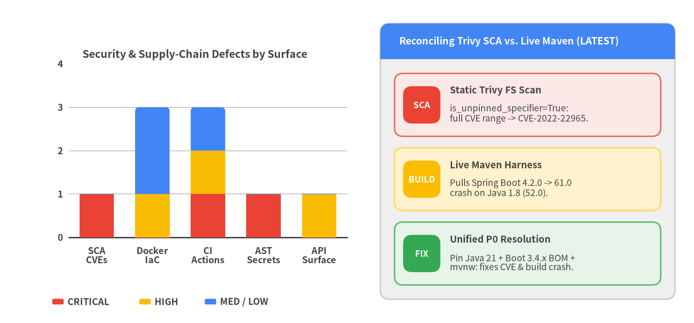
サプライチェーン・SCA・コンテナ堅牢化監査
ガバナンスおよびサプライチェーン基準値
- ロックファイルと依存衛生:
has_lockfile=False（mvnwおよび依存検証なし）、dependencies_count=2、unpinned_dependencies_count=1（org.springframework.boot:spring-boot-starter-web:LATEST）。 - ガバナンスと自動化:
has_license=False、has_security_policy=False、has_dependency_automation=False（Dependabot/Renovate 未設定）、has_gitignore=False。 - Trivy スキャナー構成:
ghcr.io/aquasecurity/trivy:0.69.3（docker）、scanned_filesystem=True、scanned_resolved_image=False（openjdk:latest not foundによりプロジェクトイメージ構築が失敗したため、OS ベースイメージ CVE は0／未検証状態）。
アプリケーション CVE および Dockerfile IaC 設定不備
| 区分 | ID | 重要度 | 対象 | 観測状況・詳細 | 推奨対策 |
|---|---|---|---|---|---|
アプリ CVE (runtime_core) |
CVE-2022-22965 |
CRITICAL （CVSS 9.8） |
pom.xml (spring-boot-starter-web@LATEST) |
spring-framework: RCE via Data Binding on JDK 9+（is_unpinned_specifier=True — 未固定のため静的 SCA が過去全範囲を評価。一方、実 Maven ビルドは 4.2.0 を取得し Java 1.8 でクラッシュ） |
修正済み BOM 版を明示固定（最小 >= 2.5.12 / 2.6.6、推奨 Spring Boot 3.4.x BOM + Java 21 LTS） |
| コンテナ OS CVE | — |
INFO |
プロジェクト Docker イメージ | 0 件（openjdk:latest 取得失敗のため scanned_resolved_image=False） |
eclipse-temurin:21-jre-alpine へ移行しビルド済みイメージを再スキャン |
| Dockerfile IaC | DS-0002 |
HIGH |
Dockerfile |
コンテナ実行ユーザーが root のまま（非 root USER 命令が欠落） |
非 root ユーザーを作成し USER appuser を指定 |
| Dockerfile IaC | DS-0001 |
MEDIUM |
Dockerfile:1 |
FROM openjdk:latest で可変 :latest タグを使用（さらにイメージ自体が廃止済み） |
明示タグまたはダイジェスト固定（eclipse-temurin:21-jre-alpine） |
| Dockerfile IaC | DS-0026 |
LOW |
Dockerfile |
HEALTHCHECK 命令が未定義、かつ .dockerignore も欠如 |
Spring Actuator /actuator/health を検査する HEALTHCHECK と .dockerignore を追加 |
CI/CD サプライチェーン露出（.github/workflows/build.yml）
- 特権
pull_request_targetトリガー: 外部フォーク PR に対してベースリポジトリの特権トークン権限下でmvn packageを実行する危険な構成です。pull_requestトリガーへ置き換えてください。 - 明示的
permissions:ブロックの欠如: OpenSSF Token-Permissions の最小権限原則に違反しています。permissions: { contents: read }を明示してください。 - 可変ブランチ参照（
actions/checkout@main）: 変動するブランチ先端を参照しておりサプライチェーン改ざん耐性がありません。検証済みの 40 桁フルコミット SHA で固定してください。
シークレット衛生・API 攻撃面・DAST ブロック状況
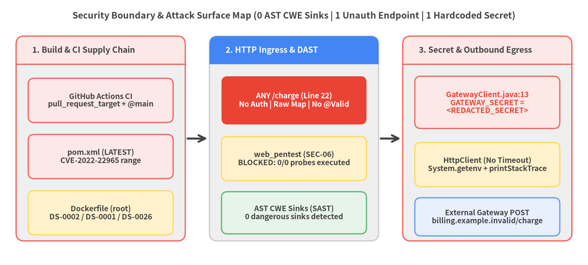
シークレット検出・AST CWE シンク・HTTP 攻撃面マトリクス
| セキュリティ領域 | 対象 / シンボル | 状態 | 監査証跡の詳細 |
|---|---|---|---|
ハードコード秘密鍵 (SEC-03) |
GatewayClient.GATEWAY_SECRET（GatewayClient.java:13） |
CRITICAL |
AST の OWASP ASVS ヒューリスティックにより、本番形式のハードコード秘密鍵リテラル（<REDACTED_SECRET>）を検出。Trivy の汎用正規表現スキャンは 0 件（ベンダー固有プレフィックス外のため）であり、AST と SCA の多層防御の有効性を示す結果となりました。直ちに削除・ローテーションし @ConfigurationProperties 注入へ移行してください。 |
| AST 危険シンク (CWE SAST) | 本番 Java ソース（187 LOC） |
PASS (0) |
SQL インジェクション、コマンド実行、安全でないデシリアライズ、XXE 等の CWE 危険シンクは 0 件。 |
抽出 HTTP API 攻撃面 (SEC-05) |
ANY /charge -> BillingController.chargeCustomer（BillingController.java:22） |
HIGH |
無制限 @RequestMapping("/charge") が GET/POST/PUT/DELETE 等すべての HTTP メソッドを auth_hint=NONE（認証なし）・生 @RequestBody Map・Bean Validation（@Valid）なしで受け付けます。 |
動的 Web ペネトレーション (SEC-06) |
.pni/pentests/examples/java/api_spring_messy |
ERROR（ブロック） |
4 つの pytest/httpx プローブ（conftest.py, test_app_probes.py, test_baseline_http.py, test_target_surface.py）を生成済みですが、Java 8 下での spring-boot-4.2.0.jar ビルド失敗によりコンテナ起動不可（server_booted=False, 0/0 プローブ実行）となりました。P0 ビルド復旧後、直ちに再実行してください。 |